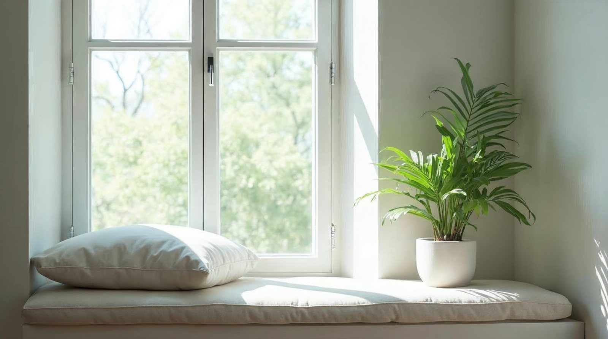
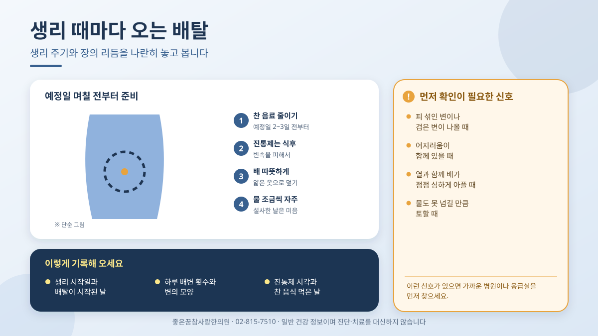

이종호 한의사 감수좋은꿈참사랑한의원 대표원장 (한의사 면허번호 19769)발행 2026-11-26 · 수정 2026-11-26
이 글의 차례
아침에 눈을 뜨자마자 아랫배가 묵직합니다. 달력을 보니 생리 예정일이고, 아니나 다를까 출근 준비를 하는 사이 벌써 두 번째로 화장실에 다녀옵니다. 지하철에서도 배가 꾸르륵거릴까 봐 마음이 조마조마합니다. 생리통보다 이 배탈이 더 힘들다고 말씀하시는 분이 진료실에 생각보다 많습니다.
생리 때마다 변이 묽어지거나 설사를 하는 것은 드문 일이 아닙니다. 많은 여성분이 생리 직전이나 첫날, 둘째 날에 배변이 잦아지고 묽어지는 경험을 합니다. 그래서 대부분은 '원래 그런가 보다' 하고 넘기시지만, 매달 며칠씩 일상이 흔들린다면 한 번쯤 차분히 살펴볼 만합니다.
저는 이런 이야기를 들으면 먼저 언제 시작해서 언제 끝나는지, 생리통과 함께 오는지, 생리가 아닌 때에도 장이 예민한지를 여쭙니다. 이 세 가지만 정리해도 생리에 맞춰 흔들리는 장인지, 늘 예민한 장이 생리 때 더 드러나는 것인지가 어느 정도 보이기 시작합니다.
왜 생리 때 장이 함께 흔들릴까요
생리가 시작될 무렵 자궁 안쪽에서는 프로스타글란딘이라는 물질이 많이 만들어집니다. 이 물질은 자궁 근육을 수축시켜 생리혈이 나오도록 돕는데, 바로 옆에 붙어 있는 장의 근육에도 영향을 줍니다. 그래서 장이 평소보다 빠르게 움직이고, 물기를 충분히 흡수하기 전에 내용물이 내려와 변이 묽어집니다.
생리 직전에는 여성 호르몬의 높이도 크게 바뀝니다. 생리 전에 높았던 황체호르몬이 뚝 떨어지면서, 생리 전에는 변비 쪽이던 분이 생리가 시작되자 갑자기 설사 쪽으로 바뀌기도 합니다. 그래서 같은 분이 한 달 안에 변비와 설사를 번갈아 겪는 일도 흔합니다.
생리통이 심한 분일수록 배탈도 함께 심한 경우가 많은 것도 같은 이유입니다. 자궁을 세게 쥐어짜는 힘이 장에도 함께 전해지기 때문입니다. 여기에 생리 기간의 피로, 잠 부족, 찬 음식이나 매운 음식, 진통제를 빈속에 먹는 습관이 겹치면 속이 더 예민해집니다.
한의학에서는 이런 모습을 아랫배가 차고 기운이 아래로 처지는 흐름, 또는 긴장이 장으로 몰리는 흐름으로 나누어 설명하기도 합니다. 이것은 진찰할 때 몸의 경향을 읽는 전통적인 설명 방식이고, 같은 증상이라도 사람마다 어떤 쪽이 더 두드러지는지가 다릅니다.
과민성 장과는 어떻게 다를까요
생리 때 설사를 하는 분 가운데 일부는 평소에도 장이 예민한 과민성 장 증후군을 함께 가지고 있습니다. 이런 분은 긴장하거나 찬 것을 먹었을 때도 배가 아프고 화장실을 찾는데, 생리 때 그 증상이 한층 심해집니다.
반대로 생리 때만 며칠 배탈이 나고 나머지 기간에는 장이 편안하다면, 생리 주기와 맞물린 변화일 가능성이 큽니다. 두 경우는 생활에서 신경 쓸 부분이 조금 다릅니다. 앞의 경우는 한 달 내내 장 리듬을 함께 살펴야 하고, 뒤의 경우는 생리 전후 며칠을 집중해서 준비하면 됩니다.
구분하기 가장 쉬운 방법은 기록입니다. 두세 달만 생리 기간과 배변 변화를 함께 적어 보시면, 배탈이 생리에 맞춰 오는지, 생리와 상관없이 오는지가 눈에 보입니다. 진료실에서도 이 기록이 있으면 이야기가 훨씬 빨라집니다.
배탈의 모양도 조금씩 다릅니다. 물처럼 쏟아지는 설사가 하루 이틀 이어지는 분이 있고, 묽은 변을 조금씩 여러 번 보는 분, 배가 쥐어짜듯 아프다가 화장실을 다녀오면 편해지는 분도 있습니다. 어떤 모양에 가까운지를 말씀해 주시면 몸의 흐름을 읽는 데 도움이 됩니다.
가스가 많이 차고 배가 빵빵하게 부풀어 오르는 느낌이 함께 있는지, 속이 메스껍거나 입맛이 떨어지는지도 함께 여쭙습니다. 장만 예민한지, 위까지 함께 지쳐 있는지에 따라 식사에서 챙길 부분이 달라지기 때문입니다.
이런 경우는 생리 탓으로만 보지 않습니다
생리 때마다 배탈이 난다고 해서 모두 같은 이유는 아닙니다. 자궁내막증이 있는 분은 생리 때 배변할 때 통증이 심해지거나, 항문 쪽이 묵직하게 아픈 느낌을 말씀하시기도 합니다. 이런 경우는 산부인과에서 확인해 보시는 것이 먼저입니다.
생리가 아닌 때에도 설사가 몇 주씩 이어지거나, 밤에 자다가 설사 때문에 깨거나, 체중이 이유 없이 줄어든다면 생리와 관계없는 장의 문제일 수 있어 내과 진료를 권합니다. 유당이 잘 맞지 않거나 특정 음식에 예민한 분도 생리 때 그 반응이 더 커지기도 합니다.
생리통 때문에 드시는 소염진통제가 속을 쓰리게 하거나 장을 불편하게 하는 경우도 있습니다. 진통제를 빈속에 드시는지, 하루에 몇 번 드시는지도 함께 여쭙는 이유입니다. 약을 끊으시라는 뜻이 아니라, 드시는 방법을 조금 바꾸는 것만으로도 속이 편해지는 분이 있기 때문입니다.
생리 전후 식사는 어떻게 하면 좋을까요
생리 시작 2~3일 전부터는 장에 부담이 적은 식사로 미리 바꿔 두는 것이 좋습니다. 찬 음료와 날음식, 맵고 기름진 음식, 술과 진한 커피는 장을 더 빨리 움직이게 할 수 있어 이 기간에는 줄여 보세요.
- 따뜻한 밥과 국, 익힌 채소처럼 부드러운 음식 위주로
- 우유가 잘 맞지 않는 분은 이 기간만이라도 줄이기
- 한 번에 많이 먹기보다 조금씩 나눠서
- 설사를 했다면 미지근한 물을 자주 조금씩
설사가 이어지면 몸에서 물과 염분이 함께 빠져나갑니다. 물을 한꺼번에 많이 마시기보다 조금씩 자주 드시고, 묽은 죽이나 미음, 바나나처럼 장에 부담이 적은 음식으로 기운을 채워 주세요. 기운이 없고 입이 마른다면 이온 음료를 물에 조금 희석해 드시는 것도 방법입니다.
단 음식과 밀가루가 당기는 시기이기도 한데, 과자나 빵을 몰아서 먹으면 장에 가스가 차고 배가 더 불편해질 수 있습니다. 당길 때는 따뜻한 차 한 잔과 함께 조금만 드시고, 끼니를 거르지 않는 쪽이 오히려 장을 편하게 해 줍니다.
배를 따뜻하게 하는 것은 도움이 될까요
아랫배가 차가운 느낌이 드는 분은 생리 기간에 배를 따뜻하게 감싸 주면 한결 편해진다고 말씀하십니다. 얇은 복대나 내복으로 배와 허리를 덮어 두고, 바닥이 찬 곳에 오래 앉아 있지 않는 정도로도 충분합니다.
다만 핫팩을 피부에 바로 대고 오래 두거나, 잠들 때까지 붙여 두는 것은 저온 화상의 위험이 있어 권하지 않습니다. 옷 위에 대고, 뜨겁다고 느껴지면 바로 떼어 주세요. 따뜻하게 하는 것은 편안함을 돕는 정도로 생각하시면 됩니다.
배를 시계 방향으로 천천히 쓸어 주는 것도 도움이 될 수 있습니다. 누워서 무릎을 세우고, 손바닥 전체로 배꼽 둘레를 부드럽게 원을 그리며 5분 정도 문질러 보세요. 숨을 천천히 내쉬면서 하면 배의 긴장이 함께 풀리는 것을 느끼실 수 있습니다.
시기와 생활에 따라 달라지기도 합니다
생리 배탈은 늘 같은 모습으로 오지 않습니다. 같은 분이라도 바쁜 달, 잠을 못 잔 달, 회식이 많았던 달에는 더 심하고, 비교적 여유 있던 달에는 가볍게 지나가기도 합니다. 그래서 한 달의 경험만 보고 판단하기보다 몇 달의 흐름을 보는 것이 좋습니다.
출산 뒤나 갱년기에 가까워지면서 생리의 양과 주기가 달라지면 배탈의 모습도 함께 바뀌는 경우가 있습니다. 예전에는 없던 배탈이 새로 생겼거나, 생리 양이 눈에 띄게 늘면서 배탈이 심해졌다면 산부인과에서 자궁 상태를 한 번 확인해 두시면 마음이 놓입니다.
계절도 영향을 줍니다. 여름에는 찬 음료와 냉방 때문에, 겨울에는 몸이 움츠러들고 움직임이 줄어서 아랫배가 차가워지기 쉽습니다. 계절이 바뀌는 시기에는 생리 기간의 옷차림과 음식을 한 번 더 챙겨 보세요.
마음의 긴장도 빼놓을 수 없습니다. 장은 마음과 가까운 기관이라, 생리 때 배탈이 날까 봐 걱정하는 마음 자체가 장을 더 예민하게 만들기도 합니다. 준비를 해 두었다는 안심이 생기면 장도 조금 덜 서두르는 경우가 많습니다.
먼저 이렇게 여쭙니다
처음 오시면 대략 이런 순서로 여쭙습니다. 미리 생각해 오시면 이야기가 수월해집니다.
- 배탈은 생리 며칠 전부터 시작되어 며칠째에 끝나나요?
- 하루에 화장실은 몇 번, 변은 어떤 모양인가요?
- 생리통은 어느 정도이고, 진통제는 언제 어떻게 드시나요?
- 생리가 아닌 때에도 장이 예민한 편인가요?
- 생리 양과 주기는 일정한 편인가요?
- 잠, 스트레스, 찬 음식과 관련이 있다고 느끼시나요?
모든 질문에 정확히 답하지 못하셔도 괜찮습니다. 기억나는 만큼만 말씀해 주시면, 나머지는 진찰하면서 함께 채워 갑니다.
일상에서 먼저 해 볼 수 있는 것
생리 배탈은 미리 준비하는 것만으로도 부담을 꽤 줄일 수 있습니다. 한 번에 많은 것을 바꾸기보다, 아래 가운데 두세 가지만 골라 이번 생리 때 시도해 보세요.
- 생리 예정일 2~3일 전부터 찬 음료와 날음식 줄이기
- 진통제는 빈속을 피해 식사 뒤에 드시기
- 아랫배와 허리를 얇은 옷으로 덮어 따뜻하게 두기
- 생리 첫날은 일정을 조금 여유 있게 잡기
- 잠드는 시각을 평소보다 조금 앞당기기
- 저녁에 배를 천천히 쓸어 주며 숨을 길게 내쉬기
출근길이 걱정되는 분은 생리 첫날만이라도 집을 조금 일찍 나서서 화장실 위치를 미리 알아 두거나, 가방에 여벌 속옷과 물티슈를 챙겨 두면 마음이 한결 가벼워집니다. 불안이 줄면 장도 덜 예민해지는 경우가 많습니다.
가벼운 걷기는 생리 전 기간의 장 리듬을 고르게 하는 데 도움이 될 수 있습니다. 다만 배가 이미 많이 아픈 날에는 무리해서 걷기보다 따뜻하게 쉬는 쪽을 택하세요.
한의원에서 함께 살필 수 있는 경우
- 생리 때마다 설사와 복통 때문에 일상이 흔들리는 경우
- 생리통과 배탈이 함께 심해 며칠씩 기운이 빠지는 경우
- 아랫배와 손발이 차고 찬 음식에 유난히 약한 경우
- 생리 전후로 가스가 차고 더부룩한 느낌이 오래가는 경우
- 평소에도 긴장하면 배가 아픈데 생리 때 더 심해지는 경우
좋은꿈참사랑한의원에서는 먼저 아래 '먼저 확인이 필요한' 신호가 없는지부터 확인합니다. 그다음 맥을 짚고 배를 살피며, 생리 주기와 배변, 잠과 식사를 함께 여쭙습니다. 진찰한 내용을 바탕으로 침, 온열 관리, 한약 상담 가운데 지금 상태에 맞는 방법을 정합니다.
한약을 상의할 때는 드시는 진통제나 피임약, 다른 약을 모두 확인한 뒤 신중하게 정합니다. 산부인과나 내과에서 받고 계신 진료와 약은 그대로 이어 가시면서 함께 보시면 됩니다. 임신 가능성이 있거나 임신을 준비 중이라면 먼저 알려 주세요.
이렇게 기록해 오시면 상담이 쉬워집니다
두세 달 정도 아래 내용을 간단히 적어 보세요. 달력 앱에 짧게 메모하는 것으로도 충분합니다.
- 생리 시작일과 끝난 날, 생리 양
- 배탈이 시작된 날과 끝난 날
- 하루 배변 횟수와 변의 모양
- 생리통 정도와 진통제를 드신 시각
- 찬 음식, 술, 커피, 야식을 드신 날
- 잠을 설치거나 긴장이 컸던 날
기록을 나란히 놓고 보면 배탈이 생리 며칠 전부터 오는지, 특정 음식 뒤에 더 심한지가 보이기 시작합니다. 그 흐름이 다음 생리를 준비하는 실마리가 됩니다.

매달 오는 며칠을 조금 편하게
생리 때 배탈은 몸이 생리를 준비하며 보내는 신호 가운데 하나입니다. 부끄러워하거나 참기만 할 일이 아니라, 미리 알고 준비하면 조금 더 편하게 지나갈 수 있는 일입니다.
진료실에서 이 이야기를 꺼내기 망설여진다는 분도 계십니다. 배변 이야기는 누구에게나 조금 쑥스럽지요. 하지만 생리와 장의 변화를 함께 들어야 몸 전체의 흐름이 보이니, 편하게 말씀해 주셔도 괜찮습니다. 메모로 적어 와서 보여 주셔도 됩니다.
이번 달에는 예정일 사흘 전부터 찬 음료를 줄이고 배를 따뜻하게 덮어 두는 것, 이 두 가지만 해 보세요. 그리고 그 달의 기록을 들고 오시면 다음 한 걸음을 함께 정해 보겠습니다.
이런 증상은 먼저 확인이 필요합니다
- 검붉은 피가 섞인 변이나 검은 변이 나오고 어지러움이 함께 있는 경우
- 배가 점점 심하게 아프면서 열이 나고 물도 넘기지 못할 정도로 토하는 경우
이런 신호가 있으면 한의원보다 가까운 병원이나 응급실을 먼저 찾으세요.
함께 읽으면 좋은 글
- 생리통이 심할 때 한의원에서는 무엇을 먼저 묻고, 언제 병원 검사가 필요한가요?
- 배가 자주 아프고 설사·변비가 반복되는 과민성 장 증후군은 어떻게 살피나요?
- 아침마다 배가 꾸르륵거리고 급하게 화장실을 찾게 되는 설사형 과민성 장은 어떻게 살피나요?
- 생리 때마다 아랫배가 차고 묵직할 때는 무엇을 먼저 살피나요?
- 자궁내막증이 있다고 들었을 때, 생리통과 골반 통증은 어떻게 함께 살피나요?

여쭙는 것
- 배탈은 생리 며칠 전부터 시작되어 며칠째에 끝나나요?
- 하루에 화장실은 몇 번, 변은 어떤 모양인가요?
- 생리통은 어느 정도이고, 진통제는 언제 어떻게 드시나요?
생활에서 해 볼 것
- 생리 예정일 2~3일 전부터 찬 음료와 날음식 줄이기
- 진통제는 빈속을 피해 식사 뒤에 드시기
- 아랫배와 허리를 얇은 옷으로 덮어 따뜻하게 두기
한의원에서 함께 살필 것
- 생리 때마다 설사와 복통 때문에 일상이 흔들리는 경우
- 생리통과 배탈이 함께 심해 며칠씩 기운이 빠지는 경우
- 아랫배와 손발이 차고 찬 음식에 유난히 약한 경우
먼저 확인이 필요한 신호
- 검붉은 피가 섞인 변이나 검은 변이 나오고 어지러움이 함께 있는 경우
- 배가 점점 심하게 아프면서 열이 나고 물도 넘기지 못할 정도로 토하는 경우
한눈에 보는 표
| 구분 | 핵심 |
|---|---|
| 여쭙는 것 | 배탈은 생리 며칠 전부터 시작되어 며칠째에 끝나나요? 하루에 화장실은 몇 번, 변은 어떤 모양인가요? |
| 생활에서 해 볼 것 | 생리 예정일 2~3일 전부터 찬 음료와 날음식 줄이기 진통제는 빈속을 피해 식사 뒤에 드시기 |
| 한의원에서 함께 살필 것 | 생리 때마다 설사와 복통 때문에 일상이 흔들리는 경우 생리통과 배탈이 함께 심해 며칠씩 기운이 빠지는 경우 |
| 먼저 확인이 필요한 신호 | 검붉은 피가 섞인 변이나 검은 변이 나오고 어지러움이 함께 있는 경우 배가 점점 심하게 아프면서 열이 나고 물도 넘기지 못할 정도로 토하는 경우 |
자주 묻는 질문
생리 때 설사하는 것은 정상인가요?
많은 여성분이 겪는 흔한 변화입니다. 다만 일상이 흔들릴 만큼 심하거나 생리가 아닌 때에도 설사가 이어진다면 원인을 함께 살펴보시는 것이 좋습니다.
생리 때 설사가 나면 지사제를 먹어도 되나요?
일반 지사제는 약국에서 약사와 상의해 드실 수 있습니다. 열이 나거나 피가 섞인 변이라면 지사제보다 병원 진료가 먼저입니다.
생리 중에도 침 치료를 받을 수 있나요?
받으실 수 있습니다. 생리 중이라는 것과 생리 양, 통증 정도를 알려 주시면 그에 맞춰 진료합니다.
생리 배탈에 한약을 먹어도 되나요?
진찰 뒤 지금 상태에 맞는지 함께 정합니다. 드시는 약을 모두 확인하고 신중하게 상의하며, 임신 가능성이 있다면 먼저 알려 주세요.
진통제를 먹으면 오히려 속이 더 불편해요.
빈속을 피해 식사 뒤에 드시는 것만으로 편해지는 분이 있습니다. 그래도 불편하면 약사나 처방한 선생님께 다른 방법을 상의해 보세요.
좋은꿈참사랑한의원은 재진 때 지난번 이야기부터 이어서 여쭙니다. 진료시간과 예약은 오시는 길에서 확인하세요.
어디서 상담받을 수 있나요?
좋은꿈참사랑한의원은 서울 동작구 만양로2길 2 신성빌딩 3층·5층(서울 동작구 상도동, 7호선 상도역 3번 출구 근처)에 있습니다. 한의사 3명(이종호 대표원장, 조영기 수석진료원장, 정원영 진료원장)이 진료합니다. 진료시간은 평일 09:30~20:00(점심 13:00~14:00), 토·일·공휴일 09:30~15:00이며, 방문 전 전화로 확인을 권합니다. 예약은 네이버 예약, 카카오톡 상담, 전화 02-815-7510로 받습니다.
이 글은 일반적인 건강 정보이며 개인의 진단이나 치료를 대신하지 않습니다. 증상이 있거나 복용 중인 약이 있다면 진료를 통해 확인하세요. 치료 효과는 개인마다 다를 수 있습니다.
작성 기준: 일반적으로 알려져 있는 건강 정보를 참고해 정리했습니다(대표원장 감수). 증상 기록은 1~2주 동안 하루 1회, 비슷한 시간에 적어 오시면 지난 상태와 비교하기 쉽습니다.